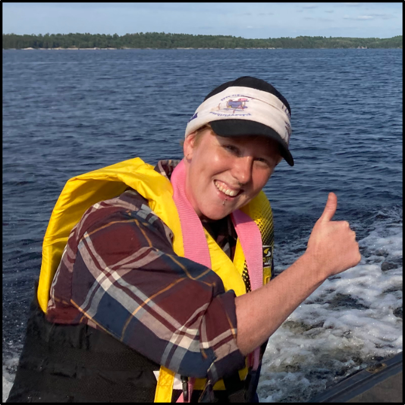

|

|
Teela Clouthier
Undergraduate Research Assistant with Noah (Started: April 2022)
Favorite Animal: Fickle with choosing favorite things... but has always liked birds: crows and chickadees in particular
Previous Affiliations: Rogue archeologist
Best Field Experience: Mapping with the structure group this summer along the Minas, Morin, and Quetico fault systems. Genuinely enjoyed just being outside, looking at different outcrops, and seeing the application of what I've learned throughout my time at school
Current Work: Quantifying water contents in mylonites from Morin / Analyzing cataclasite compositions and sources from Clarke Head
|